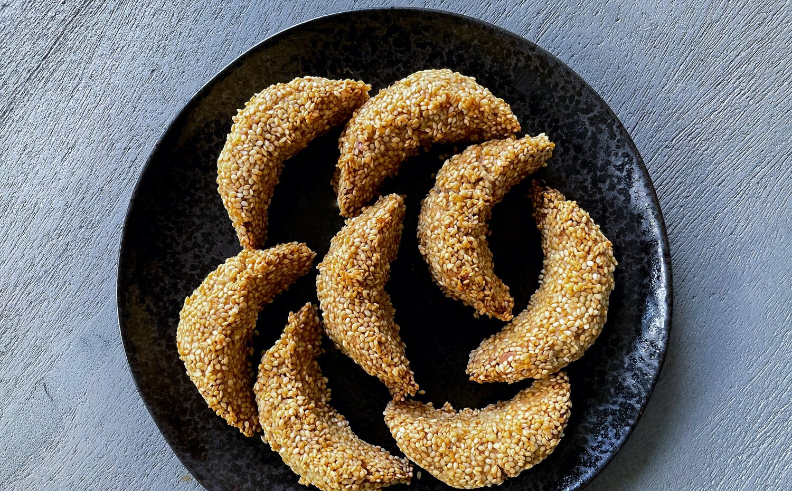

Sesame seeds gazelle

Sesame seeds gazelle horns with rainbow sprinkles
For me gazelle horns mean one thing: Moroccan teatime! If you get the chance to enjoy teatime in a Moroccan home there’s a big chance that you will find a plate of gazelle horns, next to ghribas or almond briouats and of course a big pot of Moroccan mint tea!
These gazelle horns are made with almond paste flavoured with orange blossom and cinnamon and because I felt like giving them a little fun touch, I’ve added rainbow sprinkles to the mix! They are also covered in sesame seed which gives them a delicious crunch and a nutty flavour. They’re totally addictive!.
p.s: In order to create a very visible funfetti effect, make sure that you use vibrant and colourful sprinkles and ideally artificial ones, I noticed that naturally dyed sprinkles are not as vibrant once baked.
Ingredients
- 150g sesame seeds
- 250g ground almond
- 120g caster sugar
- 2 tablespoons orange blossom water
- 40g unsalted butter, softened
- ¼ teaspoon salt
- ¼ pinch of ground cinnamon
- 2 tablespoons rainbow sugar sprinkles
- 2 egg whites
Steps
- Preheat the oven to 200°C (180°C fan), Gas Mark 6. Spread the sesame seeds out on a baking tray and roast for 7–10 minutes or until golden, stirring halfway through to make sure that they roast evenly. Remove from the oven, tip the sesame seeds into a shallow bowl and leave to cool. Leave the oven on at the same temperature.
- Use your hands to mix the almonds and the butter until the butter is evenly spread. Add in the sugar, orange blossom water, butter, salt and cinnamon and mix together until you have a moist paste.
- Mix in in the sprinkles, making sure that they are evenly distributed. Divide the paste into 14 equal-sized portions, then shape each into a cylinder 5cm long.
- Line a baking sheet with baking paper. Dip each almond paste cylinder into the egg white, then immediately coat in the roasted sesame seeds. Use your fingers to mould each sesame-coated cylinder into a crescent shape and place on the lined baking sheet.
- Bake the gazelle for 10 to 12 minutes or until golden. Remove from the oven and leave them to cool on the baking sheet for 10 minutes, then transfer to a wire rack to cool completely
Enjoy!